这一章在做什么
这一章从 1850 年代芝加哥街上的烂泥和粪便出发。先是把整座城市抬高、铺下水道，接着发现下水道把饮用水弄脏了，于是需要细菌理论、数细菌的办法，最后是往自来水里加氯。链条从这里岔开：一支通到婴儿死亡率，一支通到泳池和泳装，一支通到广告业，末尾落在芯片厂的无尘室和不接下水道的马桶上。
读的时候抓住一件事：每一步靠的都是看见、量出原先看不见的东西。
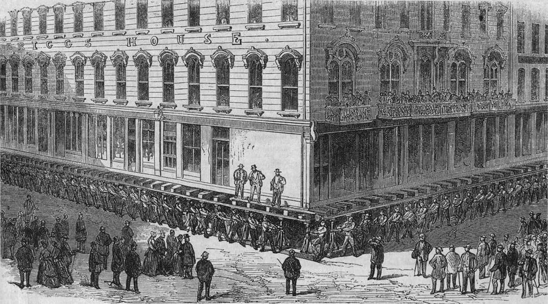
芝加哥抬升布里格斯旅馆（Briggs House）的版画，年份有 1857 和 1866 两种说法。楼脚下那一排人各管几个螺旋千斤顶，听口令一起拧。第 1 节讲的就是这件事。
作者不详，公有领域，维基共享资源 因果链：这一章的蜂鸟效应
主链（§1–§3）：从烂泥到加氯
城市人口暴涨 §1
排污危机、霍乱 §1
抬高城市铺下水道 §1
地下管网式的城市 §1
地铁、电缆、光纤
污水流进饮用水 §2
修好的下水道 反过来弄脏了水源
还缺两样：弄懂病因、直接杀菌
病例地图 §3
新式显微镜 §3
镜片来自第 1 章的玻璃
细菌致病理论 §3
数细菌：水质可测 §3
自来水加氯 §3
洗澡成了日常习惯 §3
细菌理论，加上通到家里的自来水， 把「泡水伤身」的老观念翻了过来
本站示意图。前三节的主链。注意第 2 节那个向下的箭头：它不是进步，是上一步惹出来的新麻烦，全章的后半段都是为了收拾它。 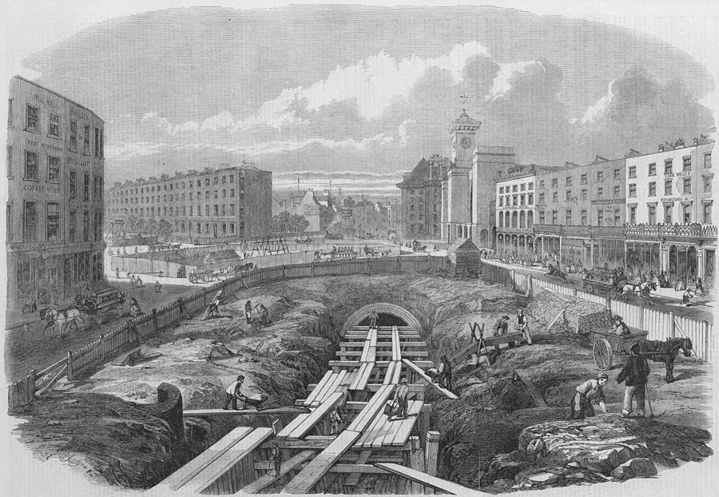
主链上的第一个分叉：把城市的「内脏」放到地下。图为 1861 年伦敦大都会铁路在国王十字附近施工，先挖沟、再盖顶。这条世界上第一条地下铁路 1863 年通车。
Percy William Justyne，公有领域，维基共享资源
支线（§4–§6）：加氯之后岔到哪里去了
自来水加氯 §3
婴儿死亡率大降 §4
全章分量最重的一环
公共泳池 §4
泳装越来越小 §4
细菌致病理论 §3
家用清洁卫生用品 §5
整版广告、肥皂剧 §5
下水道＋干净的水 §1–§4
千万人口的大城市 §6
超大城市的贫民窟 §6
无尘室、超纯水 §6
芯片 §6
不接下水道的马桶 §6
把干净推到极端
旧路走不通，要新办法
本站示意图。后三节的四条支线，蓝色是作者点名的蜂鸟效应。最后一行是全章的收尾：芯片得在极干净的地方才造得出来，而新式马桶又要靠芯片。 最出人意料的一跳在第 4 节：往水库里倒漂白粉，二十年后女式泳装用的布料少了九成。中间只隔一环（公共泳池），每一环都讲得通。
第二跳在第 5 节：一个医学理论，成了现代广告业的起点。读这两处时留意作者加的限定语，他并没有说氯「造成」了这些变化。
分节地图
原书这一章分 6 节，节与节之间是一条短横线，每节开头几个词是小型大写字母。读完一节回来打个勾。
In December 1856, a middle-aged …约 1600 词 立起问题：城市要长大，先得排污。抓住「平地排不了水」和「地下那座看不见的城」。 OF ALL THOSE ACHIEVEMENTS, more …约 500 词 转折：下水道把污水送进了饮用水。由此引出真正的主角，看不见的细菌。 WHEN YOU GO BACK to look …约 2500 词 全章重心：观念、地图、显微镜、计量凑齐了，才轮到往水里加氯。最长，分三段读。 ULTIMATELY THE COURT CASE was …约 1000 词 算账：先是死亡率数字，再是氯怎样通到泳池和泳装。留意作者的限定语。 THROUGH THE NINETEENTH CENTURY, the …约 600 词 从公共工程转进家里：细菌理论卖出了清洁用品，顺带催生现代广告。末尾留一个疑问。 THE CONFLICT BETWEEN MAN and …约 1600 词 收束再翻转：干净让城市变大，也造出了芯片；问穷国能不能跳过下水道这一步。
背景：作者默认你知道的事
这一章的人名比前几章少，但文学典故、美国品牌和英制单位很密。按出现的顺序补上。
§1 壮游，和三个芝加哥人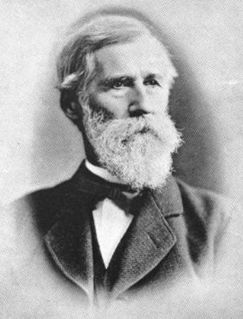
埃利斯·切斯布罗，出自 1886 年的《工程新闻》。
作者不详，公有领域，维基共享资源 壮游（Grand Tour）：17 到 19 世纪英美上层子弟成年前去欧洲大陆走一圈，看建筑和名画，算是教育的最后一课。切斯布罗走的也是这条路线，看的却是下水道。
埃利斯·切斯布罗 Ellis S. Chesbrough 铁路和运河出身的工程师，从波士顿被请来主持全城下水道。
威廉·奥格登 William Butler Ogden 1837 年当选芝加哥第一任市长。书里引他初到时踩进烂泥的抱怨。
乔治·普尔曼 George Pullman 年轻时在芝加哥抬房子，后来靠铁路卧铺车厢发财。
§1 瘴气说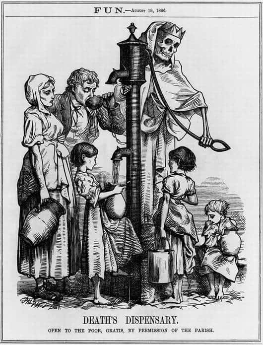
《死神的药房》，1866 年伦敦霍乱期间刊在讽刺杂志《Fun》上。下面那行小字说：对穷人免费开放，教区恩准。这时水传说已经开始占上风。
George John Pinwell，公有领域，维基共享资源 瘴气说（miasma theory）认为霍乱、伤寒这类疫病来自腐烂物散发的臭气，人吸进去就得病。它在 19 世纪中叶是医学界的主流看法。
它不算全错：照它的思路去清垃圾、通下水道，疫情确实会减轻。错在病因：致病的是喝进去的东西，不是闻到的东西。这一章前半段的所有人都活在这个错误里。
§2 开膛手杰克、《屠场》和「扒粪」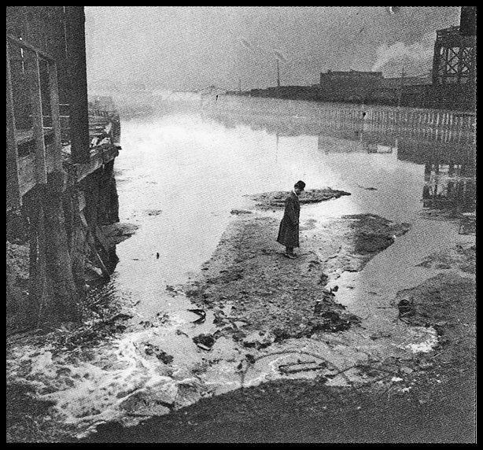
1911 年，一个人站在泡泡河（Bubbly Creek）水面结成的污物硬壳上。
作者不详，公有领域，维基共享资源 开膛手杰克（Jack the Ripper）：1888 年在伦敦东区连杀数名女性的凶手，至今身份不明，是维多利亚时代「城市之恶」的代名词。
《屠场》（The Jungle ，1906）是厄普顿·辛克莱写芝加哥肉类加工厂的小说，出版当年就推动美国通过了肉类检验和食品药品法。
muckraker（扒粪者）是老罗斯福总统给这类揭黑幕的记者起的外号，后来成了褒义词。泡泡河是芝加哥河的一条支汊，屠宰场的废料都往里倒。
§3 塞麦尔维斯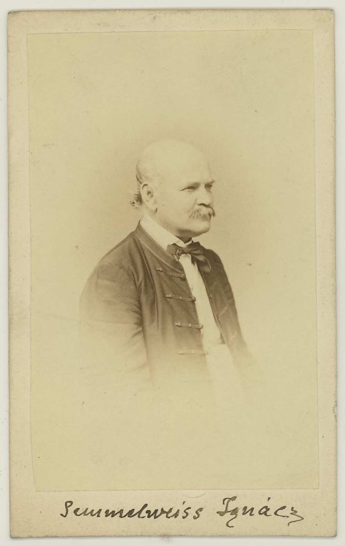
伊格纳茨·塞麦尔维斯，1860 年。
József Borsos / Albert Doctor，公有领域，维基共享资源 伊格纳茨·塞麦尔维斯（Ignaz Semmelweis，1818–1865），匈牙利产科医生。1847 年他在维也纳总医院要求医生接生前用漂白粉溶液洗手，产褥热死亡率立刻大降，他本人却被同行排挤。
书里说两个产房一个收富人、一个收工人；通行的记载是两个都收穷人，区别只在一个由医学生实习、一个由助产士实习。不影响作者的论点。
§3 洗澡那几段里的一串名字伊丽莎白一世是 16 世纪的英国女王，路易十三是 17 世纪的法国国王。狄更斯不用介绍。《卖花女》（Pygmalion ，1913）是萧伯纳的剧本，语音学教授希金斯把街头卖花女伊莱莎改造成淑女，后来改编成音乐剧《窈窕淑女》。
斯托夫人就是写《汤姆叔叔的小屋》的那位。书里引的那句史学家的话，在化用英语谚语 Cleanliness is next to godliness （干净仅次于敬神）。波音 747 是大型客机，拿来比喻洗澡说明书写得有多繁琐。
§3 斯诺的地图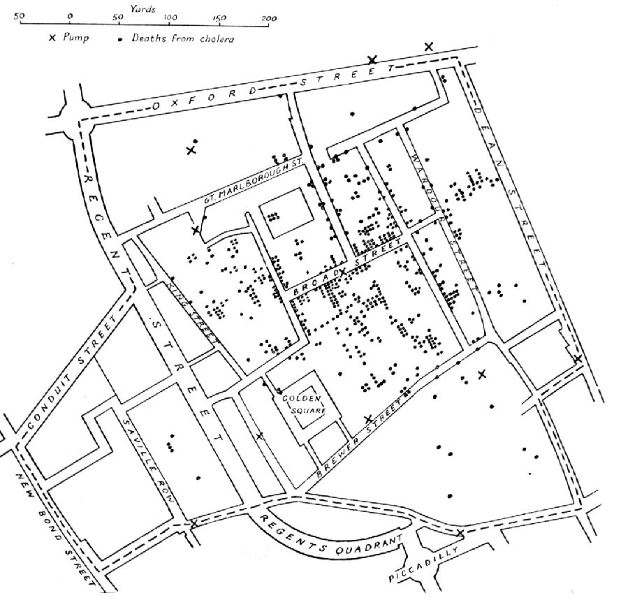
后人按斯诺原图重绘的版本。黑点是 1854 年的霍乱死亡病例，叉号是水泵。黑点围着中间宽街（Broad Street）那台水泵扎堆。
据 John Snow 原图重绘，公有领域，维基共享资源 约翰·斯诺（John Snow，1813–1858），伦敦医生，也是早期的麻醉专家。1854 年苏豪区霍乱爆发，他挨家挨户记下死者住址，发现病例围着同一台公共水泵分布。
这件事通常被当作流行病学（epidemiology）的起点。《柳叶刀》（The Lancet ）是英国最老牌的医学期刊之一，所以它那篇冷淡的讣告才值得作者一提。
§3 科赫、巴斯德和蔡司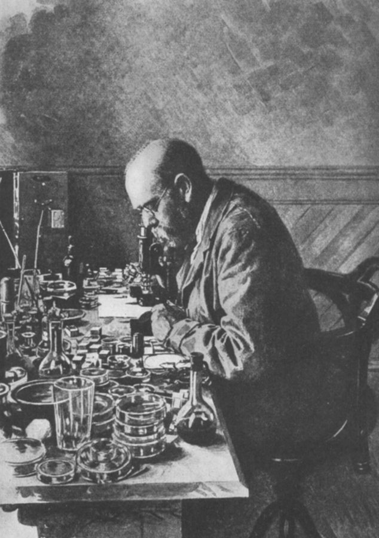
实验室里的罗伯特·科赫，约 1885 年。
作者不详，公有领域，维基共享资源
罗伯特·科赫 Robert Koch 德国医生，先后确认炭疽、结核、霍乱的病原菌。1905 年的诺贝尔奖是奖他的结核病研究。
路易·巴斯德 Louis Pasteur 法国化学家，巴氏消毒法出自他。两人的竞争带着德法之争的味道。
卡尔·蔡司 Carl Zeiss 在德国耶拿开光学作坊，和物理学家阿贝合作，用公式而不是手感来设计镜头。
蔡司本人 1888 年去世。书里说科赫 1905 年获奖后写信给他，这封信只能是写给蔡司公司的，或者年份有出入。
§3 利尔和泽西城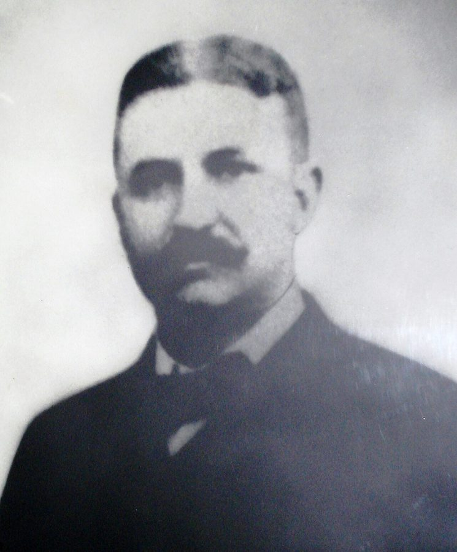
约翰·利尔医生。
Drinkingwaterdoc，CC BY-SA 3.0，维基共享资源 约翰·利尔（John L. Leal，1858–1914），新泽西州的医生。泽西城（Jersey City）在哈德逊河西岸，对面就是曼哈顿，水源是西北方向几十公里外的布恩顿水库。
美国南北战争（1861–1865）里病死的士兵比战死的多，书里那组团级数字说的就是这个。书中的七十亿加仑约合 2650 万立方米。
§4 泳池、泳装，和三个富豪
澳大利亚游泳运动员安妮特·凯勒曼（Annette Kellerman）和她的连体泳衣，20 世纪初。书里没提她；放在这里是让你看看，当年引起争议的「暴露」是什么样子。
Bain News Service，公有领域，维基共享资源
一码（yard）约 0.91 米，十码布差不多九米。between the wars 指两次世界大战之间，1918 到 1939 年。
爱迪生、洛克菲勒（石油）、福特（汽车）是美国人心目中「靠发明和实业暴富」的三个标准像，作者拿他们和没申请专利的利尔对比。
§5 Clorox、Listerine 和肥皂剧
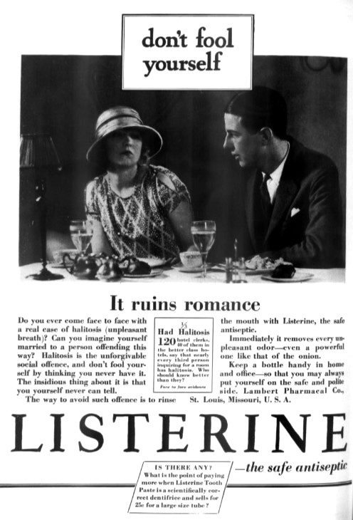
李施德林广告，1927 年 8 月《Vogue》。标题说口臭「毁掉恋情」。
Lambert Pharmacal Company，公有领域，维基共享资源 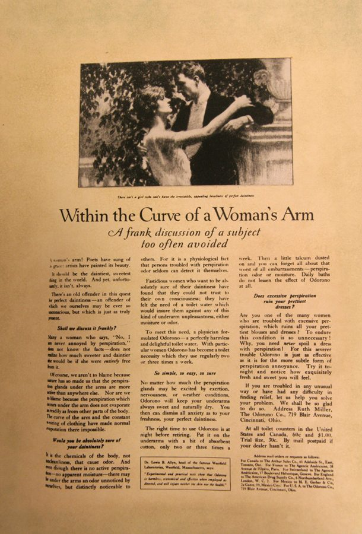
Odorono 止汗剂的整版广告，标题是「在女人臂弯里」。
Smithsonian Institution，公有领域，维基共享资源
Clorox（高乐氏）是美国家用漂白水的代名词。Listerine（李施德林）漱口水的名字取自外科消毒法的先驱李斯特。Palmolive（棕榄）是香皂，Odorono 的名字读出来是 Odor? Oh no! 。
这几家的广告套路相同：先让你担心自己有味道、有细菌、会当众出丑，再卖给你解药。肥皂剧（soap opera）一词来自 1930 年代的日间广播连续剧，赞助商多是肥皂厂。
还有几处一句话就够：
书里的说法 节 是什么 Great Plains §1 北美大平原，落基山以东的产粮区。芝加哥是它通往东海岸的转运口。 Pleistocene §1 更新世，约 258 万年前到 1.17 万年前，也就是通常说的冰河时代。 a mile high / ten feet §1 一英里约 1.6 公里；十英尺约 3 米。 an acre / 750-ton §1 一英亩约 4000 平方米，半个多足球场。美制一吨约 907 公斤，750 吨约合 680 公吨。 stockyards §1 牲畜围场。芝加哥当时是全美的屠宰和肉类加工中心。 Russian roulette §2 俄罗斯轮盘赌：左轮手枪里只装一颗子弹，转一下弹巢，对着自己扣扳机。 pint §5 品脱，美制约 0.47 升。 Michigan Avenue §6 芝加哥最体面的一条大街，这里代指富裕世界。和 favela（巴西的贫民窟）对举。 Caltech / Texas Instruments §6 加州理工学院；德州仪器，美国的老牌芯片公司。 Pig Pen §6 漫画《花生》（史努比那部）里的一个小男孩，走到哪儿身边都裹着一团灰。
这一章的科学，先用中文过一遍
重力排水：为什么平地反而麻烦
19 世纪的下水道没有泵，污水靠管子的坡度自己往低处流，和代码里的数据只能顺着依赖方向流一样。管子要一路向下斜，出口还得高过河面。
芝加哥的地面只比湖面高一点，又是不透水的黏土，管子一斜，出口就落到水面以下了。向下挖不行，剩下的办法是把起点垫高：先在原地面上铺管子，再填土盖住，街面和房子跟着升上去。
抬高之前
房子
河
管子要有坡度，出口就落到水面以下， 污水排不出去
抬高之后
房子
新街面，高约 3 米
原来的地面
填土
河
下水道埋在填土里，一路向下斜， 出口仍在水面以上，靠重力流走
本站示意图（比例夸张）。书里的 grade 就是这个坡度。它也解释了第 2 节的麻烦：靠重力流走的污水，终点只能是附近最低的那片水，而那片水正是全城的水源。 平板计数：怎么数看不见的东西
细菌太小，在水里没法一个一个数。科赫的办法是让每个细菌自己「放大」：把水样混进透明的营养明胶，铺在玻璃板上放几天，每个活细菌原地繁殖成一个肉眼可见的小斑点，叫菌落（colony）。
数斑点就等于数细菌，于是水质有了一个数。书里给的线是每毫升不到 100 个菌落。
对程序员来说，这相当于从「上线后看用户投诉」变成「提交前跑测试」：以前改了水厂要等几年看死亡人数，现在取一杯水，几天就知道结果。
把「数细菌」变成「数斑点」
1 毫升水样
混进明胶，铺在玻璃板上
放置几天
一个活细菌长成一个菌落
数菌落 每毫升不到 100 个：可以喝
本站示意图。作者说「新的测量办法带来新的制造办法」，指的就是这一步：有了这个数，才谈得上试验哪种消毒法管用、加多少合适。 氯怎么杀菌，人喝了为什么没事
利尔用的漂白粉（chloride of lime），有效成分是次氯酸钙（calcium hypochlorite）。它溶进水里会生成次氯酸，一种很小、不带电的分子，能穿过细菌的外壁，把里面的酶和蛋白质氧化掉，细菌就死了。
人喝了没事，靠的是剂量：自来水里的余氯在百万分之一上下，够杀单细胞的细菌，对人体微不足道。同一种东西浓度高了照样伤人。
书里有一处说得不严谨：它说次氯酸钙「更为人知的名字是氯」。严格讲，氯（chlorine）是元素，单质是黄绿色的有毒气体；漂白粉是含氯的化合物。家用的 Clorox 漂白水则是次氯酸钠溶液。
漂白粉 含次氯酸钙
溶进水里
次氯酸 HOCl 不带电的小分子
细菌
钻进去，氧化掉酶和蛋白质
同一种东西，差在剂量
浓度越来越高
自来水里：百万分之一上下 细菌死，人没事
浓溶液 对人同样有毒
本站示意图。利尔在法庭上被追问的正是下面这条轴：对方盯着右端，他凭实验知道自己站在左端。 微米，和「比干净还干净」
一微米（micron，micrometer）是一百万分之一米。这一章前半段的敌人是几微米大的细菌，最后一节的敌人是比细菌大得多的灰尘，因为芯片上的线路比细菌还细。
书里写的线宽是 0.1 微米，那是成书时的说法，现在的先进芯片还要再小一两个数量级。
无尘室（clean room）不断把过滤过的空气从上往下吹，人要全身裹起来，因为人自己就是最大的污染源。洗芯片用的超纯水（ultrapure water）连溶解的矿物质都去掉了，只剩 H₂O。
这一章里的几个尺寸
芯片上的线路 0.1 微米
霍乱弧菌 3 微米
皮肤细胞 30 微米
头发丝粗细 100 微米
对数刻度，每个短竖线之间差十倍。数字取自书里。芯片线路比霍乱弧菌细几十倍。
本站示意图。圆点大小只是示意。书里打的比方是：一粒家里的灰尘落在芯片上，按比例像一座大山砸进城里的街道。 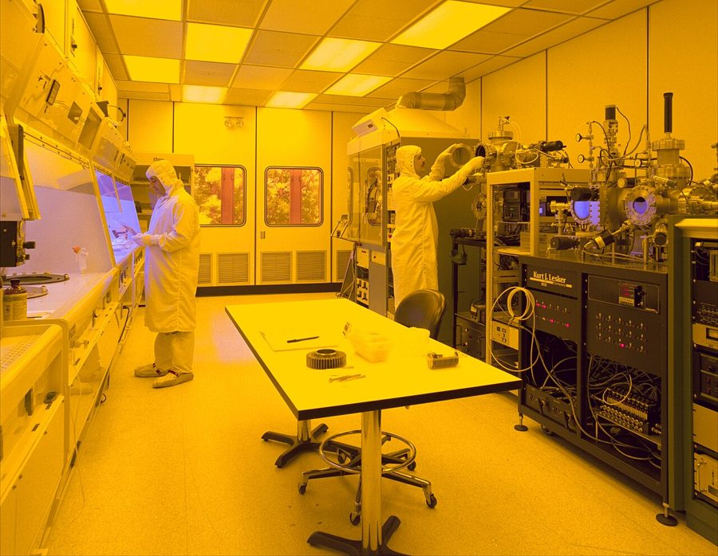
半导体无尘室。黄光是因为做芯片用的感光材料怕蓝光和紫外线。作者说这里的防护服是反着用的：防的不是环境伤人，是人弄脏环境。
上传者 Duk，公有领域，维基共享资源
英文 中文 一句话 sewer / sewage 下水道 / 污水 sewer 是管子，sewage 是管子里流的东西；sewerage 指整套排污系统。 jackscrew 螺旋千斤顶 拧螺杆把重物一点点顶起来。换轮胎用的千斤顶就是 jack。 cholera 霍乱 霍乱弧菌引起的急性腹泻，靠被粪便污染的水传播，脱水致死很快。 dysentery / typhoid 痢疾 / 伤寒 另外两种经水和食物传播的肠道传染病。 miasma 瘴气 旧理论里致病的「毒气」。形容词 miasmatic。 germ theory of disease 细菌致病理论 传染病由特定的微生物引起。germ 是口语里的「病菌」。 puerperal fever 产褥热 产后的细菌感染，书里也叫 childbed fever。 antiseptic / disinfectant 抗菌的 / 消毒剂 前者多指用在人身上的，后者多指用在物品和环境上的。 chlorinated lime, chloride of lime 漂白粉 两个都是老名字，有效成分是次氯酸钙。法庭上叫它 bleaching powder。 pathogen 病原体 能致病的微生物的统称。 epidemiology 流行病学 不看单个病人，看病在人群里怎么分布、怎么传播。 infant mortality 婴儿死亡率 一岁以内死亡的比例。child mortality 一般指五岁以内。 photovoltaic cell 光伏电池 太阳能电池板的基本单元。 silicon wafer 硅晶圆 切成薄片的单晶硅，芯片就刻在上面。 solvent 溶剂 能把别的东西溶解带走的液体。超纯水什么都不含，所以什么都想溶。
词与短语
词条按在书里出现的顺序排，按节分组。斜体小字是它所在的那句话里的几个词，方便你在书里找到。
§1 In December 1856, a middle-aged …
take in
… to take in the monuments of …
游览，观赏
take in 意思很多（吸收、收留、欺骗）。宾语是景点、演出时是「去看」：take in a show 。
only
… Only Chesbrough hadn’t made his pilgrimage …
只不过，可是
放在句首当连词用，等于 but，口气轻一点。不是「只有切斯布罗」。pilgrimage 是朝圣，这里是玩笑话。
in dire need of
… a city in dire need of expertise …
急需
dire 是「极其严重的」，几乎只出现在几个固定搭配里：dire need 、dire consequences 、dire straits 。
hamlet
… gone from hamlet to metropolis in …
小村子
比 village 还小。和哈姆雷特无关。
in a matter of
… metropolis in a matter of decades …
短短（几十年）之内
后面接时间，强调「才这么点时间」。下一段的 in a matter of minutes 同理。
grade
… a reliable descending grade down to …
坡度
熟词生义，不是年级、分数。这一节反复出现：artificial grade 是人造的坡度，节末的 below grade 是地面以下。
a good problem to have
… like a good problem to have …
让人羡慕的烦恼
固定说法，比如「订单多得做不完」。作者先说平地听上去像这种烦恼，下一句 But 就翻过来。
give way
… the planks would give way, and …
塌了，撑不住断了
主语是木板、桥、堤坝时是「垮掉」，不是「让路」。plank 是厚木板。
scatological
… from something more scatological: when …
跟粪便有关的
文绉绉的大词，作者用它来避开直说，带点幽默。同一句后面的 excrement 是「排泄物」的书面说法。
turn up one’s nose
… very swine turn up their noses …
嫌弃，看不上
字面是把鼻子翘起来。the very swine 的 very 是「就连」：连猪都嫌脏。swine 是猪的旧称，单复数同形。
runaway growth
… cities experiencing runaway growth, as we …
失控的增长
runaway 作形容词：刹不住的。runaway inflation 是恶性通胀，runaway success 是大获成功。
subscribe to
… of them subscribed to the then-prevailing …
信奉，赞同（某种看法）
不是订阅。then-prevailing 是「当时占主流的」，then 加连字符当前缀用。
conventional wisdom
… would not become conventional wisdom for …
公认的看法
不带褒义，常常是「大家都这么以为」。第 3 节的 prevailing wisdom 是同一个意思。
find one’s man
… they had found their man, Ellis …
找到了要找的那个人
one’s man 是「合适的人选」。I’m your man ：这事找我就对了。
footing
… build a new footing under the …
基脚，墙基
建筑用语。平时更常见的是比喻义「立足点」：on an equal footing 。前面的 mason 是砌砖石的工匠。
Herculean undertaking
… in such a Herculean undertaking, when …
极其艰巨的工程
Herculean 来自希腊神话的大力士赫拉克勒斯。undertaking 是「着手做的大事」；undertaker 却是殡葬师，别混。
break ground
… water lines before breaking ground on …
破土动工
后面用 on 接工程。groundbreaking （开创性的）由它引申而来，第 3 节会碰到。
shift one’s quarters
… more houses shifting their quarters. One …
搬家，换地方
quarters 复数是「住处、营房」。这是当年一位访客的俏皮话：房子自己在搬家。
§2 OF ALL THOSE ACHIEVEMENTS, more …
Russian roulette
… was effectively playing Russian roulette …
俄罗斯轮盘赌：拿命去碰运气
effectively 在这里是「实际上等于」，不是「有效地」。这本书里的 effectively 大多是这个意思。
defining
… of the defining killers of nineteenth-century …
最有代表性的，一提那个时代就想到的
不是「下定义」。a defining moment 是决定性的时刻。
haunt
… Jack the Ripper haunting the streets …
（像鬼魂一样）出没于
a haunted house 是闹鬼的房子。
breed
… the diseases bred by contaminated water …
滋生
bred 是 breed 的过去分词，别看成 bread。本义是繁殖、饲养。
fatal flaw
… the—literally—fatal flaw in Chesbrough’s plan …
致命缺陷
这个短语平时是比喻。作者用两个破折号插进 literally ，意思是这回真的要人命。全书常用这种写法把比喻落到实处。
privy
… the streets and the privies and …
（屋外的）茅房
老词。形容词 privy to 是「知道内情的」，是另一个用法。
empty into
… which emptied directly into Lake Michigan …
（河流）注入
empty 作动词。说河流流进湖海的标准说法。
hoover up
… and then hoovered up into the …
吸进去
Hoover 是吸尘器的牌子，在英式英语里变成了动词，像中文说「百度一下」。
squeamish
… with what squeamish citizens called chowder …
容易犯恶心的，神经脆弱的
chowder 是美国东北部的海鲜浓汤。当时人的黑色幽默：浴缸里放出来一锅鱼汤。
muckraking
… work in the muckraking tradition of …
揭黑幕的（新闻写作）
muck 是粪肥、烂泥，rake 是耙子。下一句的 literal muckraking 又是把比喻按字面用：这本小说真的在写污物。
turn-of-the-century
… the filth of turn-of-the-century Chicago …
世纪之交的
不说哪个世纪时，在美国书里默认指 1900 年前后。
in excruciating detail
… Chicago in excruciating detail, as in …
细致到让人难受
excruciating 本义是剧痛的。第 4 节再出现时用的是本义：最痛苦的经历。
more often than not
… but more often than not they …
多半，往往
字面：是的次数多过不是的次数。等于 usually。
§3 WHEN YOU GO BACK to look …
doesn’t compute
… it simply doesn’t compute …
说不通，没法理解
出自老科幻片里机器人的台词 Does not compute ，后来成了口语。前面的 beyond comical 是「已经不止是可笑了」。
roundly
… Semmelweis was roundly mocked and criticized …
狠狠地，一边倒地
和「圆」无关。只跟批评、击败、谴责这类词连用：roundly condemned 。
take hold
… antiseptic behaviors to take hold among …
站稳，被普遍接受
主语是观念、习惯、疫情。第 32 段又用了一次。和引言里的 take root 同义。
well-to-do
… one for the well-to-do, attended by …
有钱人
形容词加 the 当名词用。attend 在这段是「照料、接诊」，不是出席。
stop in its tracks
… could be stopped in its tracks …
当场截住
tracks 是脚印：走到半路被定住。
draw a bath
… baths constructed and drawn for them …
放洗澡水
draw 是「汲水」的老用法，和画画无关。这句是说：连有人伺候洗澡的王室都不洗。
clean freak
… was a veritable clean freak compared …
洁癖
X freak 是「对 X 着魔的人」：control freak 、neat freak 。veritable 是「名副其实的」，这里是反讽：一个月洗一次也算洁癖了。
catch one’s death
… I should catch my death …
着凉送命
全称是 catch one’s death of cold 。英式英语里 I should 等于 I would。这是剧中人的台词。
fringe
… gone from fringe idea to scientific …
边缘的，非主流的
本义是流苏、边缘。go from A to B 是这本书讲转变时最常用的句型。
deliver a blow
… deliver the first decisive blow to …
给……一击
deliver 不是送货。deliver a speech （发表）、deliver a blow （打出）都是「把东西送出去」。
seminal
… the London doctor’s seminal contributions to …
开创性的，影响深远的
和 seed 同源：种子一样的。同一段的 obit 是 obituary（讣告）的简写，terse 是「短而冷淡」。
open a new front
… quickly opened a new front in …
开辟新战线
front 是前线。这一段整套用战争比喻：war on germs 、soldiers 、second front ，第 5 节还有弹药库。
pique one’s interest
… began to pique his interest as …
勾起兴趣
pique 读 /piːk/，和 peak 同音，常被写错。
rid … of
… could rid water of dangerous bacteria …
清除（水里的细菌）
rid A of B ：把 B 从 A 里除掉，顺序和中文相反。get rid of 是它的口语版。
set the stage for
… This new job set the stage for …
为……铺好了路
字面是布置好舞台。前一句的 land a job 是「谋到一份工作」。
lay audience
… be meaningless to a lay audience …
外行听众
lay 作形容词：非专业的。layman 是外行，in layman’s terms 是用大白话说。
slug
… a slug of high chlorine residual …
一股，一大团
不是鼻涕虫。水处理行话：管道里一段浓度特别高的水。residual 是余氯。这句是书中引用的另一位作者的话。
profit by
… The first to profit by it …
从中受益
不是赚钱。律师说泽西城是第一个被拿来试的，利尔改了一个词：是第一个得好处的。整段问答的戏就在这个词上。
§4 ULTIMATELY THE COURT CASE was …
special master
… the special master in the case …
（法院指定的）特别主事官
美国法院在复杂案件里委派的人，替法官听取证据、写报告。master 不是主人。
render
… is capable of rendering the water …
使……变得
render A B ：使 A 成为 B，法律文书常用。不是渲染。pure and wholesome 是判决里的原话，wholesome 是「有益健康的」。
incontrovertible
… daring move had become incontrovertible: communities …
无可辩驳的
拆开看：in + controvert（反驳）+ ible。第 6 节还会出现一次。
why
… “why, you made a fortune …
（感叹词）那可不，哎呀
后面有逗号、不是问句的 why 是语气词，表示「这还用说」。sneer 是冷笑着说。
where … comes in
… know where the fortune comes in; it …
……从何说起
come in 是「在这件事里占什么位置」。That’s where you come in ：这就轮到你出场了。
it is all the same to me
… it is all the same to me …
对我来说无所谓
不是「都一样」的字面意思，是「我不在乎」。
unencumbered by
… Unencumbered by patent restrictions and licensing …
不受……拖累
encumber 是使负重。过去分词短语放句首作原因状语，主语是后面的 municipalities（市政当局）。
staggered
… rolled out in a staggered fashion …
错开的，分批的
stagger 本义是踉跄。staggered 是时间上错开；第 3 节的 staggering 却是「大得吓人的」。roll out 就是程序员说的「逐步上线」。
a given
… one of the givens of being …
不用说的事，既定事实
given 当名词用，可以加复数。It’s a given ：这是明摆着的。
rite of passage
… swim became a rite of passage …
成长路上必过的一关
人类学术语：成人礼这类标志人生阶段的仪式。日常用来说「人人都得经历一回的事」。
leading edge
… were the leading edge in challenges …
打头阵的，最前沿
本是机翼的前缘。public decency 是「公共场合的体面」，即哪些地方不能露。
bundled up
… bundled up for a sleigh ride …
裹得严严实实
sleigh ride 是坐雪橇。早年的女式泳装像是冬天出门的打扮。
at the hands of
… bacteria die at the hands of …
死在……手里
只用于坏事：suffer at the hands of 。这里把化学品拟人了。
single-handedly
… practice of chlorination single-handedly transformed women’s …
单凭一己之力
句型是 it’s not that … （并不是说……）。这是作者给自己的因果链加的限定，别漏读。
get all the press
… usually get all the press …
占尽了关注
press 是媒体报道。get good / bad press 是口碑好 / 差。
glossy magazines
… to Hollywood or glossy magazines …
时尚杂志
glossy 是纸面光亮的，指铜版纸印的时装、名流杂志。
§5 THROUGH THE NINETEENTH CENTURY, the …
the march of
… the march of clean technologies had …
……的稳步推进
march 是行军。the march of progress 、the march of time 都是这个用法。后面的 terrain（地形）接着这个比喻。
intimate affair
… is a much more intimate affair …
更贴身、更私人的事
affair 就是「事情」，不是婚外情。a … affair 是书面语里说「是件……的事」的套子。
with hindsight
… It seems with hindsight to have …
事后看来
hind（后）+ sight。也说 in hindsight 。反义是 foresight。
sell like crazy
… bottles were selling like crazy …
卖疯了
sell 用主动形式表示「卖得怎样」。like crazy 是口语的「拼命地」。
date
… by archaeologists to date dig sites …
给……断代
动词：判定年代。carbon dating 是碳测年。dig site 是考古发掘点。
A is to B what C is to D
… bleach bottle is to the early …
A 之于 B，正如 C 之于 D
类比句型。这句有三组：漂白水瓶对 20 世纪初，矛头对铁器时代，殖民时期陶器对 18 世纪。
bombard
… Americans were being bombarded by commercial …
狂轰滥炸
本义是炮击。were being bombarded 是过去进行时的被动。
often a bridesmaid, never a bride
… “often a bridesmaid, never a bride” …
老当伴娘，当不上新娘
现在多说 always a bridesmaid ，引申为「万年老二」。广告的意思是：她嫁不出去是因为口臭。
soap opera
… today in the phrase “soap opera …
肥皂剧
名字里的 soap 真是肥皂：早期连续剧由肥皂厂出钱。linger 是「留存至今」。
big-box
… Walk into a big-box supermarket or …
大卖场式的
指沃尔玛那种像个大盒子的仓储式商店。美国的 drugstore 也不只卖药，日用品都有。这句用祈使句代替 if 从句。
munitions depot
… effectively giant munitions depots for the …
弹药库
延续「对细菌的战争」那套比喻。effectively 仍是「实际上等于」。
§6 THE CONFLICT BETWEEN MAN and …
play out
… bacteria that played out over the …
（事态）一步步展开
像戏一幕幕演下去。第 63 段问同样的模式会不会在下水道上重演，用的也是它。
trivial pursuits
… from the trivial pursuits of swimwear …
无关紧要的消遣
pursuit 是「从事的活动」，不是追赶。Trivial Pursuit 恰好也是一款有名的问答桌游的名字。和后面的 existential （事关生死的）构成一小一大。
burst through the ceiling
… burst through the population ceilings that …
冲破上限
ceiling 是上限。glass ceiling （看不见的升职天花板）、debt ceiling （债务上限）同理。
real estate
… a small amount of real estate …
地方，地皮
本义是房地产，这里只是「空间」的俏皮说法。程序员说 screen real estate 是屏幕上能用的面积。
in absolute numbers
… In absolute numbers, we have gone …
按绝对数量算
和「按比例算」相对。这是全章最容易读错的一句，见下面的检查题。
chart a path
… the same path charted by Snow …
开辟出一条路
chart 作动词：绘制航线。uncharted territory 是没人到过的地方。
unsung heroes
… all the other unsung heroes of …
无名英雄
unsung：没有人为之唱赞歌的。
so much so that
… experiment, so much so that it …
以至于，到了……的程度
第二个 so 指代前面整句话。这一句极长，主干是：这些东西给了他一个平台，以至于换个人也会做出来。
leading indicator
… might be a leading indicator of …
先行指标，先兆
经济学术语：比大势先动的数据。作者是说穷国的新办法可能预示所有人的未来。
were he around
… would recognize, were he around to …
假如他还在世
省略 if 的倒装虚拟句，等于 if he were around 。around 是「在场、活着」。
adjacent possible
… part of the adjacent possible in …
相邻可能：眼下够得着的下一步
possible 在这里是名词。借自理论生物学的概念，作者几本书都在用：每个时代能发明什么，取决于手头已有的零件。
preposterously
… they need to be preposterously clean …
离谱地
preposterous 是荒唐的。这里是夸张：干净到离谱。
spec
… A spec of household dust landing …
一粒（灰尘）
通行的拼法是 speck 。书里印成了 spec，那本来是 specification（规格）的简写，照 speck 理解。
don
… you have to don a full …
穿上
do on 的缩合，书面语。反义词 doff（脱下）来自 do off。后面的 shed 是「掉屑」。
chug
… chug a glass of the stuff …
一口气灌下去
口语。又是用祈使句表示「如果你……」。the stuff 是随口指代前面那样东西。
leech
… it will start leeching minerals out …
把……一点点吸走
leech 是水蛭。说液体把物质溶出来，更常见的拼法是同音的 leach 。
full circle
… This is the full circle of clean …
绕了一整圈，回到起点
常见形式是 come full circle 。起点是脏得不能喝，终点是干净得不能喝。
cordon off
… of filth, and cordon it off …
隔离开，围起来
cordon 是警戒线。这个短语在最后一段出现两次，下水道和无尘室各一次，是作者有意做的对称。
值得停下来的句子
New ways of measuring create new ways of making.— 第 30 段，全章的论点句。本站译：新的测量方法，造出新的制造方法。
九个词，主谓宾都是 new ways of … 。它是引言里那张表的第二行（测量能力的突破）在这一章的版本。
放在这个位置，是给前后两半搭桥：前面讲科赫怎么数细菌，后面讲利尔凭这个数去试氯。读到第 5 章讲钟表时，还会碰到同一个意思。
a trillion bacteria die at the hands of calcium hypochlorite, and somehow, twenty years later, basic attitudes toward exposing the female body are reinvented.— 第 56 段，这一章的蜂鸟效应。本站译：一万亿个细菌死在次氯酸钙手里，不知怎么的，二十年后，人们对女性露出身体这件事的基本态度就换了一套。
这是冒号后面的半句，前半句点了蜂鸟的名。两个分句用 and 连起来，时态都是一般现在时，像在陈述一条规律。
关键词是 somehow ：作者承认中间那一截乍看接不上，然后才在下一句用 it’s not that … 收紧，把泳池定位成「橱窗」而不是唯一原因。读因果链时，这种先放后收的写法要整段看完。
And now, a hundred and fifty years later, we’ve created water that’s too clean to drink.— 第 69 段，全章的收束。本站译：而现在，一百五十年过去，我们造出了干净得不能喝的水。
too … to … 是初中句型，值得停的是它和上一句的对仗：上一句末尾是 too dirty to drink ，只换了一个词。
这就是作者说的 full circle 。同一段里 contaminants 加了引号，因为矿物质对人不算污染物，对芯片才算。
检查一下理解
先在心里答，再点开。答错的那题，回书里把对应那一节再读一遍。
1.（§1）作者说在平地上建城听上去是 a good problem to have，后面为什么说它是芝加哥的致命伤？ 因为当时的下水道靠重力排水，地面没有坡度，水就流不走；芝加哥的土又不透水。平地对盖房修路是好事，对排污是坏事。所以解决办法不是往下挖，而是把城市垫高，人造一个坡度出来。
2.（§2）fatal flaw 前面为什么要插一个 literally？切斯布罗的方案错在哪？ 他把污物从街上和地下室弄走了，但管子通到芝加哥河，河水流进密歇根湖，而湖是全城的饮用水源。fatal flaw 平时只是比喻，这里是真的会死人，所以加 literally。这一节的作用是把问题从「城市尺度」转到「微生物尺度」。
3.（§3）塞麦尔维斯的故事很多人都知道。作者说其中「更少人知道」、也更让今天的人吃惊的是哪一点？ 他被嘲笑，不只是因为建议医生洗手，而是因为他建议的是：在同一个下午既解剖尸体又接生的医生，中间应该洗一下手。连这个都被当成笑话。作者用它说明当时的人和我们之间隔着的不只是技术，还有观念。
4.（§3）19 世纪以前欧洲人不洗澡，是因为家里没有自来水吗？作者拿什么证据反驳？ 不是。当时通行的看法是泡在水里对身体有害，毛孔被污垢堵住反而防病。证据是王室：他们完全有条件洗，却几乎不洗。所以洗澡的好处是后来被「发现」并一点点推广开的，不是不言自明的。
5.（§3）作者说公共卫生的突破是 maps and microscopes 的合作。两样东西各自解决了什么？在它们之后还缺哪一环，利尔才敢动手？ 地图（斯诺）间接证明了霍乱是水传的；显微镜（蔡司的镜头、科赫）让人直接看见了细菌。还缺的一环是计量：科赫数菌落的办法让水干不干净有了一个数，试验周期从几年缩到几天。利尔是拿着这个数确认小剂量的氯杀菌又不伤人，才敢往水库里加。
6.（§4）43% 和 74% 这两个数字是怎么得出来的？为什么说它「极其准确」？ 两位学者利用了一个现成条件：1900 到 1930 年间美国各城市是先后分批上的加氯和过滤，而各地的死亡数据又齐全。比较同一座城市前后、以及先上和后上的城市，就能把净水的作用单独分离出来。43% 是总死亡率的降幅，74% 是婴儿死亡率的降幅。
7.（§4）作者是在说「加氯导致了泳装变小」吗？ 不是这么强。他自己加了两层限定：女装迟早也会走向暴露，只是不会这么快；而且女权思潮、好莱坞、明星都起了作用。他的主张是，游泳成为大众消遣给这些新款式提供了一个重要的展示场合，而这个因素平时没人提。
8.（§6）In absolute numbers, we have gone backward。前面刚说完进步无可辩驳，这句是不是自相矛盾？作者接下来想把话引到哪？ 不矛盾。按比例算，过上干净生活的人多了；按人数算，今天没有干净饮水和卫生设施的有三十多亿，比 1850 年全世界的人口还多。作者用它转入最后的问题：这些人不一定要重走「大下水道」的老路，就像有些国家跳过了固定电话，新的想法和技术（包括靠芯片控制的马桶）可能让他们直接跳过去。